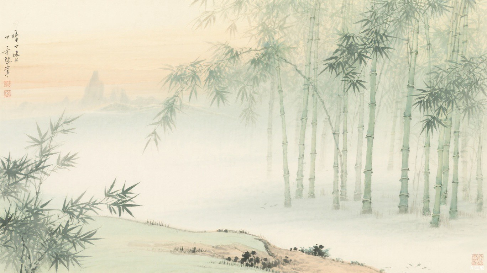
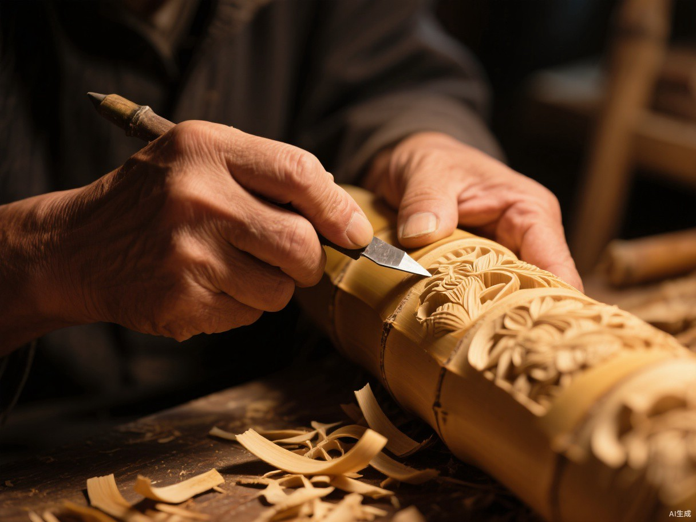
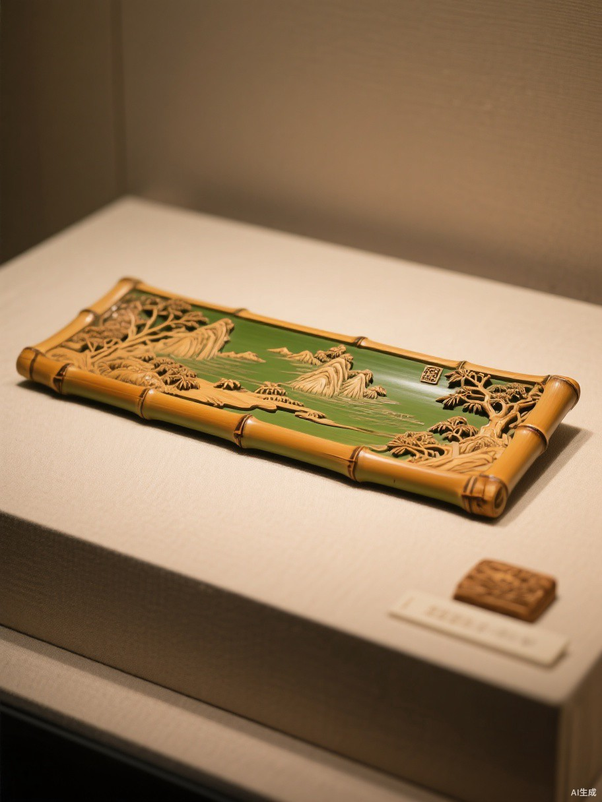
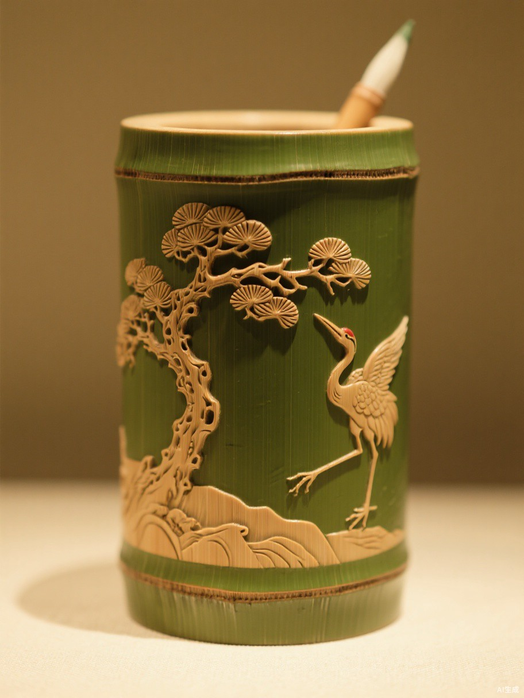
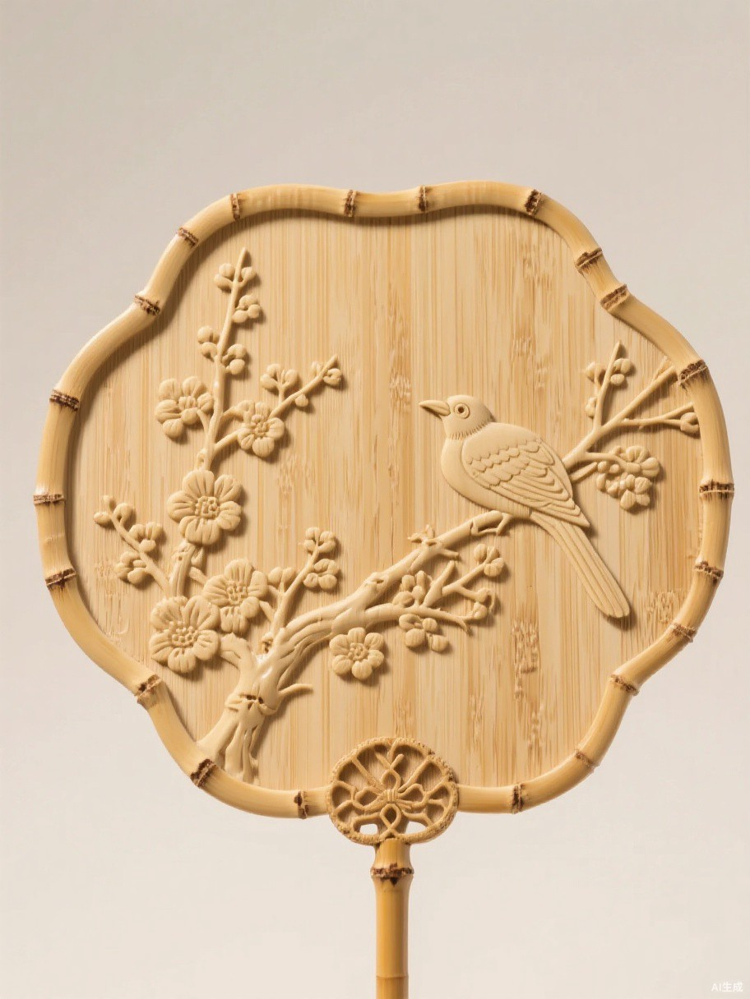
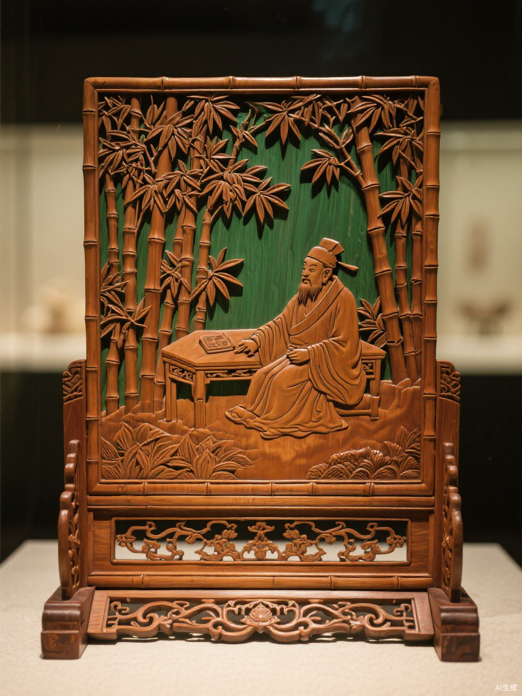

一 刀 一 刻 间 的 千 年 传 承
WHAT IS LIUQING BAMBOO CARVING
留青竹刻，是中国竹刻艺术中独树一帜的门类。匠人取竹材表面一层薄如蝉翼的青筠为"纸"，以刀为笔，通过全留、多留、少留、不留的层次变化，刻画山水、花鸟、人物、书法，使图纹呈现出水墨画般的浓淡神韵。
新刻之时，青筠微黄，清雅含蓄；随着岁月流转，竹肌渐成琥珀之色，与留青的图纹相映成趣，年愈久而色愈深，意愈远——这方竹面之上，刻下的是技艺，留下的是时光。

THE CULTURAL STATUS OF CHANGZHOU
常州留青竹刻源远流长，清末民初蔚然兴盛。它将诗、书、画、印融于盈尺竹面，以"以刀代笔、以筠为墨"的绝妙意境， 在中国竹刻艺术版图中自成高峰，成为常州这座江南名城最雅致的文化名片。
2008年，常州留青竹刻入选国家级非物质文化遗产代表性项目名录，千年刀笔之美获国家级守护。
融书画神韵于竹筠之间，青筠去留之间自成浓淡干湿，方寸竹面尽显水墨意境与金石风骨。
徐素白、白士风、徐秉方……一代代常州匠人执刀不辍，让留青之艺绵延不绝、历久弥新。
MASTERPIECES GALLERY

远山如黛，近水含烟，青筠去留之间尽显江南山水的清远意境。

苍松虬劲，仙鹤翩然，刀锋流转处寄托延年美好的传统祝愿。

寒梅吐蕊，喜鹊登枝，盈握之间尽得花鸟画的灵动生机。

高士抚琴，竹影婆娑，一刻一画皆是文人风骨与林下风流。
EXHIBITION HALLS NAVIGATION